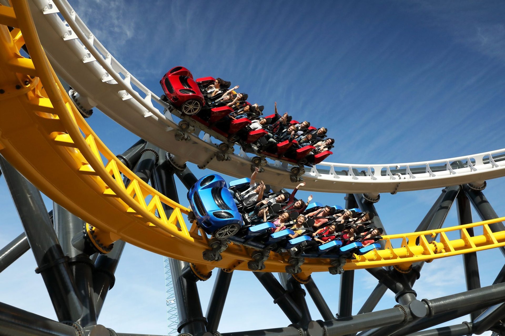
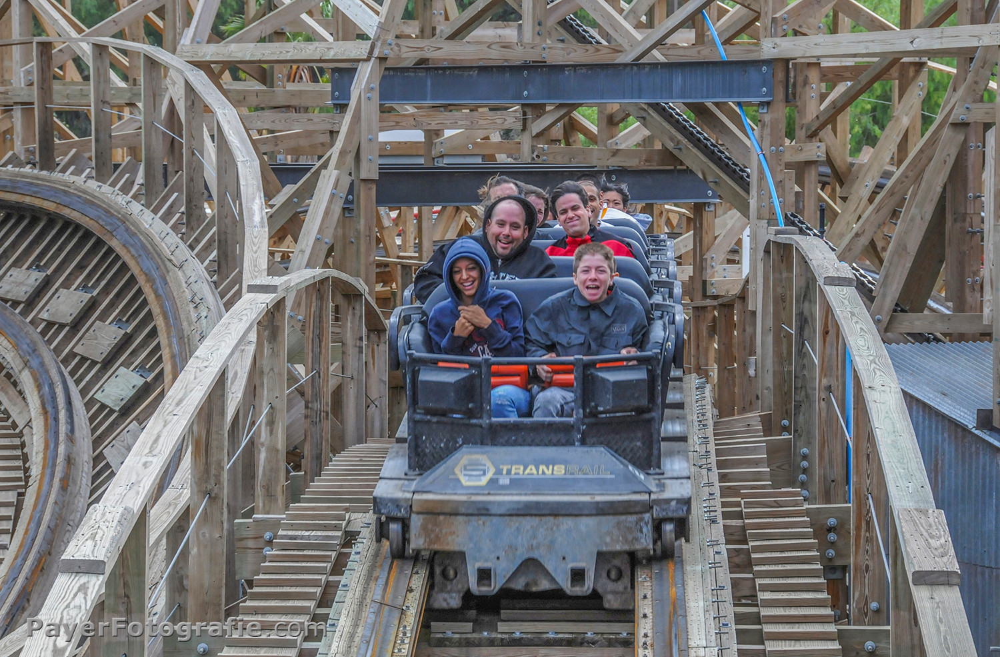
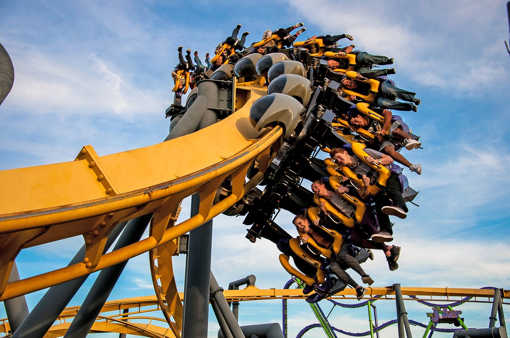
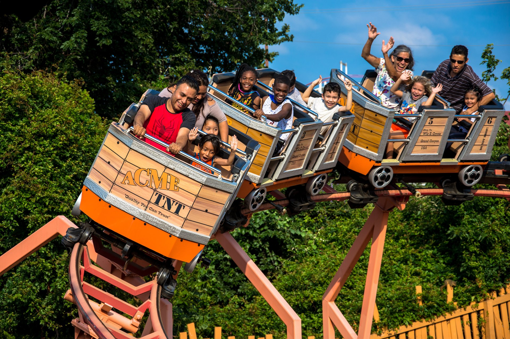
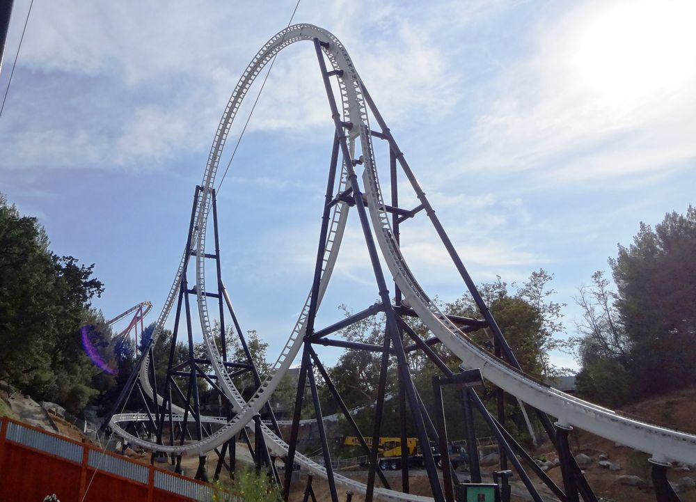
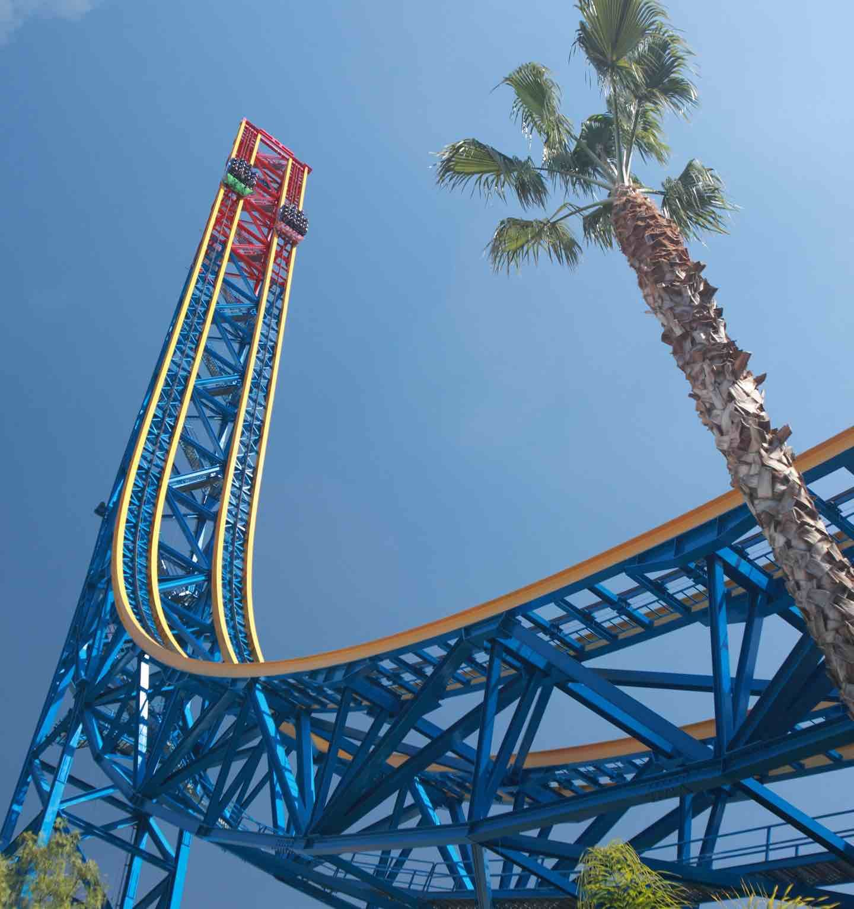
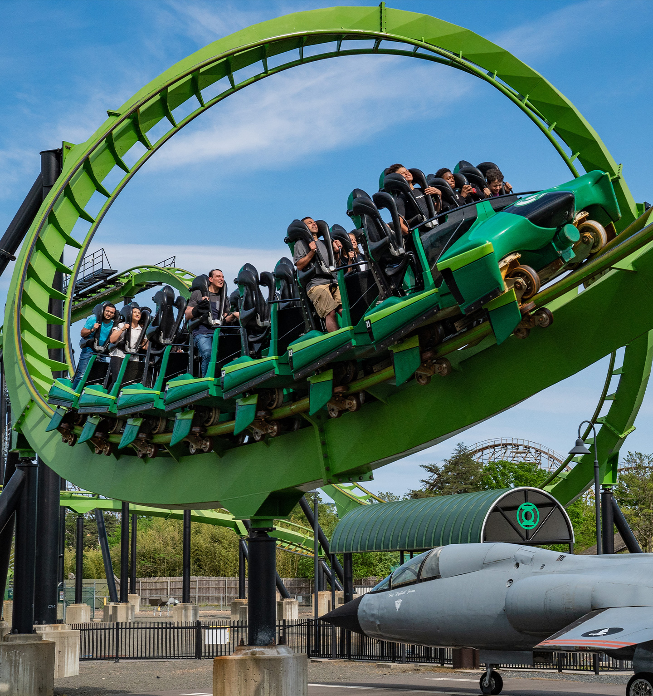
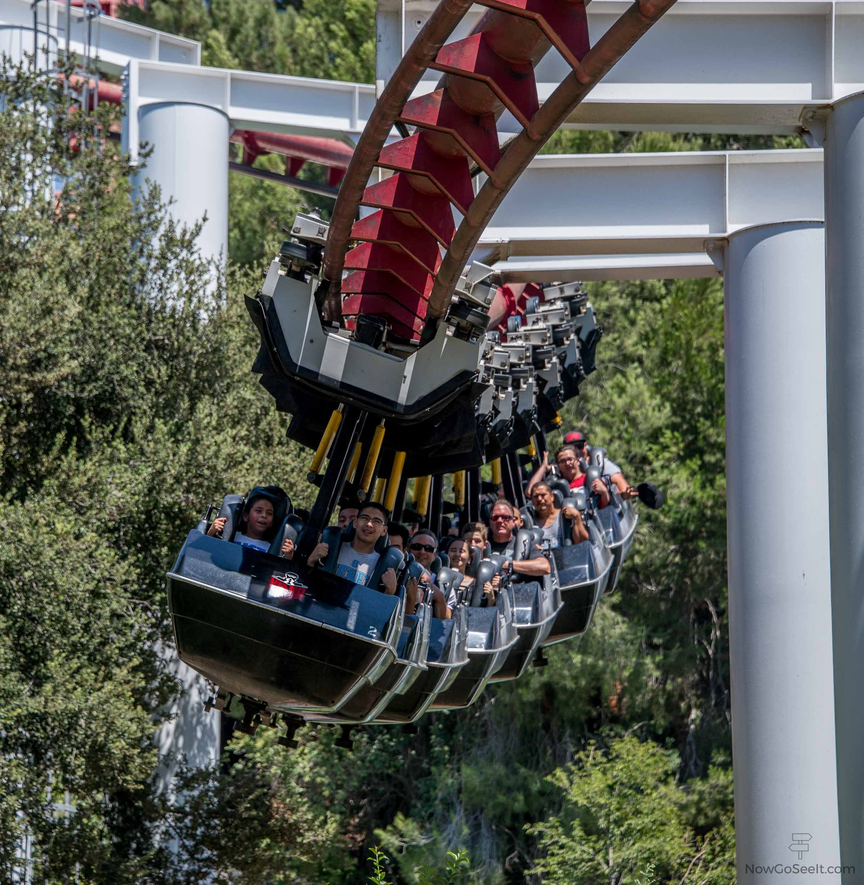

Най-големите увеселителни паркове в света
Увеселителния парк Six Flags Magic Mountain , известен преди просто като Magic Mountain , е тематичен парк , разположен във Валенсия, Калифорния , северозападно от центъра на Лос Анджелис, открит на 29 май 1971 г.

Част от увеселителните съоръжение, които лунапаркът предлага
| Име | Година на откриване | Производство | Описание | Снимка | ||||
| Apocalypse: The Ride | 2009 | Great Coasters International | Дървено влакче в увеселителен парк със стръмно наклонени завои. Известен в миналото като "Терминатор Спасение: Пътуването" (2009–2010) |  | ||||
| Batman: The Ride | 1994 | Bolliger & Mabillard | Безетажни вагони, окачени под надземна писта, се въртят около стръмно наклонени завои |  | ||||
| Canyon Blaster | 1999 | E&F Miler Industries | Детско увеселително влакче |  | ||||
| Full Throttle | 2013 | Premier Rides | Изстрелване на влакче в увеселителен парк с 2 изстрелвания напред и едно изстрелване назад. Full Throttle има най-високата вертикална линия в света, конструирана върху инверсия. Това е и най-бързото вертикално влакче в света. |  | ||||
| Superman: Escape from Krypton | 1997 | Intamin | Влакче, което се движи със 167 км/ч и за седем секунди изкачва близо 41 етажа във въздуха. Вход към Супермен бягство от Криптон, изстрелване влакче в увеселителен парк. Известен в миналото като "Супермен: Бягството" (1997–2010). |  | ||||
Green Lantern
Представлява седалки, които свободно се движат напред и назад по отделна ос от пистата.
Scream!

Безетажните вагони, които се движат над релсите и преминават през седем инверсии
Ninja
Люлеещите се вагони, окачени на надземна стоманена писта